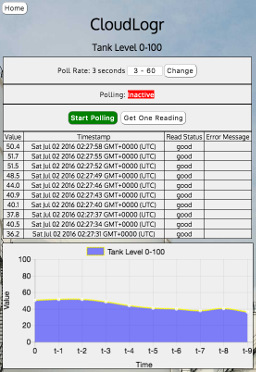

Jason Horine
web developer | problem solver | engineer
web developer
problem solver
engineer
Development
CloudLogr:
Full-Stack Node.js
A solo project, this site has an SPA front end via AJAX with a MongoDB database. The server will continue to log data even if the browser disconnects.
Good Whiskers:
Full-Stack Rails
This product review site was a group project with CRUD routes and secure user-authentication.
Tic-Tac-Toe:
HTML, CSS and jQuery
This started as a weekend jQuery homework assignment, but has grown since. It is designed for kids to use on mobile devices.

UX
Industrial Controller Configuration Dashboard
The Do-more! PLC is a powerhouse, even compared to much more expensive products. However, the power of this platform only becomes apparent to those willing to get past the steep learning curve. I took on this project after repeatedly hearing the same types of complaints from customers and Tech Support. The video explains my process.
IDE Find / Replace
A search for text in the project in an IDE can return hits in multiple types of documents. To organize the multiple locations and document types, I used a familiar directory tree structure. Three-state indicators show whether all, some or none of the folder contents will be changed by the Replace function. It all fits in a compact and intuitive UI.

About
I trained for full-stack development and love interaction design, so working on the front end of the stack is more interesting to me. Joining a small team where each dev traverses the stack would be ideal.
My  profile is up-to-date, so please check there for additional resume-like information on me.
profile is up-to-date, so please check there for additional resume-like information on me.
Aside from web development and UX, I have also:
- debugged many customers' ladder logic programs and controls hardware
- led multi-company, multi-team efforts to keep industrial customers happy
- mitigated system-wide issues within an e-commerce company
- designed industrial automation electronics
- managed CE and UL hazardous locations compliance for an electronics manufacturer
- been a small-scale production manager for electronics
- worked on electronics for the Army that I'm not supposed to talk about :)
I am also a:
- father & husband
- Back on My Feet volunteer runner
- cyclist
- gardener
- yogi
- veteran